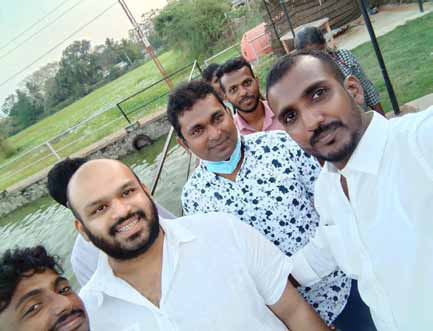
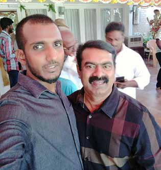
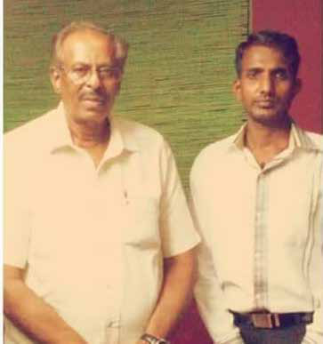

Ex-Combatants Welfare Leader Impregnates Prominent Female Functionary's Daughter, Now Faces Rape Allegations
Ex-Combatants Welfare Leader Impregnates Prominent Female Functionary's Daughter, Now Faces Rape Allegations
Jaffna Monitor hellojaffnamonitor@gmail.com 34 A 14-year-old girl from Vavuniya, now six months pregnant, and her mother have lodged a formal complaint against a former LTTE member, according to police reports. The accused, identified as S. Aravinthan- president of the Ex-Combatants Welfare Association (Poraalihal Welfare Association)— allegedly assaulted the girl on February 21st of this year. Aravinthan, who is currently in jail under the Prevention of Terrorism Act (PTA), has been accused of sexually abusing her. With the pregnancy now six months along, both the girl and her mother have also reported the incident to the District Secretariat's Child Protection Unit. Ex-Combatants Welfare Leader Impregnates Prominent Female Functionary's Daughter, Now Faces Rape Allegations BY: Our Reporter S. Aravinthan Vavuniya
Jaffna Monitor hellojaffnamonitor@gmail.com 35 Selvanayagam Aravinthan, born on January 16, 1981, hails from Paranthan, a town in the Kilinochchi District. He joined the LTTE in 2001, working covertly in its intelligence wing under the command of Colonel Charles, then head of the LTTE's operations in Colombo. Credible sources reveal that within the LTTE, he was known by the code names "Jones" or "Navalan," and also by the name Ananda Varman. His role was so secretive that even many within the LTTE's intelligence wing were unaware of his existence. Though he is currently in Weligada Prison, his listed address remains Nagapusani Amman Kovil Road, Thonikkal, Vavuniya. Aravinthan played a pivotal role in the infamous Claymore mine attack on January 2, 2008, which targeted an army bus opposite the Nippon Hotel on Slave Island (Company S. Aravinthan with ITAK MP Shanakiyan Rasamanickam S. Aravinthan with Tamil Nadu politician Seeman The office of the Ex-Combatants Welfare Association (Poraalihal Welfare Association) The logo of the Thayagam Sports Club


Jaffna Monitor hellojaffnamonitor@gmail.com 36 Roads) carrying soldiers. The explosion claimed the lives of three soldiers and critically injured 10 others. Notably, the attack occurred just a day after the assassination of Tamil lawmaker T. Maheshwaran of the United National Party (UNP) and his bodyguard at the Shree Ponnambalaneswaran Sivan Temple in Kotahena. S. Aravinthan stands at the center of a sensational scandal after being accused of impregnating the 14-year-old daughter of a prominent member of the Ex-Combatants Welfare Association in Vavuniya. The mother, once a member of the LTTE’s medical unit and originally from Eachchankulam, Shrastirikulankum in Vavuniya, is reported to have had a secretive affair with Aravinthan. This affair is said to have played a role in the eventual breakdown of her marriage. During this affair, Aravinthan, with the help of LTTE proxies and diaspora funds, opened a water filter business in Thekkawatte, Vavuniya, under the name JV Tube Water Shop. He would announce that on the 26th and 27th of November, his shop would provide free water to the public, as these two days were considered significant during the LTTE's Heroes' Day commemorations. Despite the business front, the shop became a focal point for his personal entanglements. The treasurer managed the shop, and her 14-year- old daughter frequently visited to spend time with her mother. The daughter, after transferring to a new school in Vavuniya town, often stayed at Aravinthan's house. Seen as a trusted "uncle" figure by the young woman, his home became her temporary shelter. According to police reports, it was during these stays that Aravinthan allegedly manipulated and raped the young woman, resulting in her pregnancy. The girl's pregnancy became evident a few weeks ago, and she is now six months S. Aravinthan and other members of the Ex-Combatants Welfare Association with ITAK MP S. Shritharan.
Jaffna Monitor hellojaffnamonitor@gmail.com 37 pregnant. Initially, police sources suggest that her family attempted to cover up the situation, but they eventually filed a formal complaint against S. Aravinthan. Sources indicate that Aravinthan is one of many individuals in the region who rely heavily on diaspora funds. He is reportedly receiving crores of rupees through his Thayagam Sports Club, Agni Thruvangal organization, and the Ex-Combatants Welfare Association. A few years ago, with substantial funding from the diaspora, he formed an independent group called the Liberation Tigers People's Forum to contest an election, but his group failed miserably in the polls. He has also been a key organizer of the LTTE's Great Heroes' Day and the funeral of Rajiv Gandhi's assassination accused, Shanthan. Credible reports suggest that when Shanthan's body arrived in Colombo, Aravinthan organized a rally in Vavuniya, which led other LTTE proxies and supporters to hold similar rallies in Kilinochchi, Jaffna, and other areas. According to reliable sources within his organization, Aravinthan is suspected of embezzling crores of rupees during these events. Aravinthan is reportedly in contact with controversial Tamil Nadu politicians, including Seeman, and sources indicate that he traveled to India specifically to meet him. Additionally, it is alleged that Aravinthan maintains ongoing communication with segments of the diaspora and LTTE-affiliated proxies, who provide financial support with the intention of fomenting unrest in Sri Lanka. These claims have raised serious concerns about his activities and connections, both locally and internationally. S. Aravinthan S. Aravinthan with ITAK President Mavai Senathirajah.
